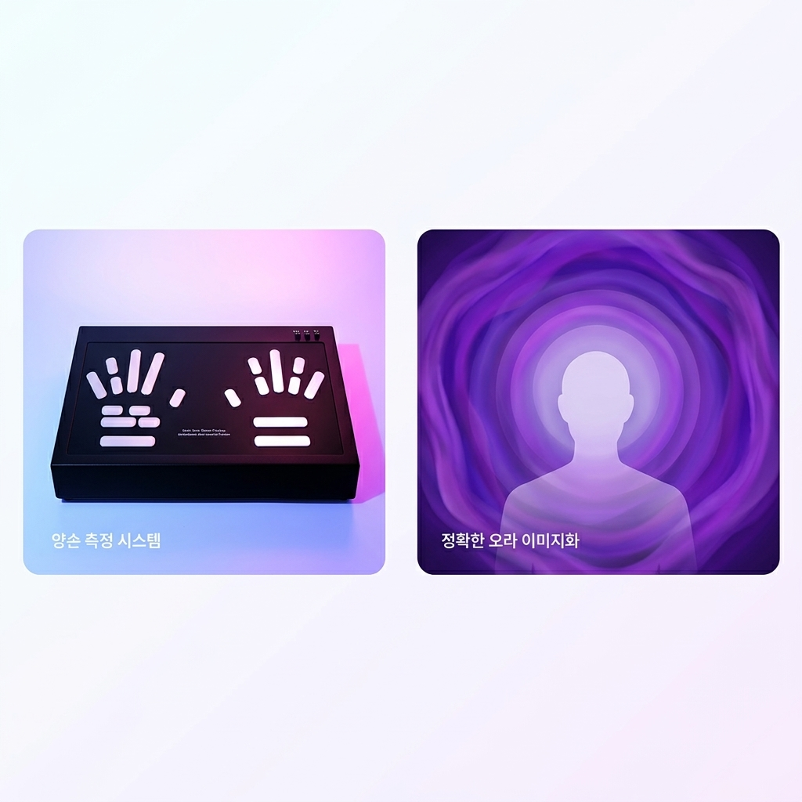

KFTA MENTAL CARE CONSULTING
당신이 오늘 무심코 고른 옷의 색은
사실, 당신의 마음이 보내는 '구조 신호'일지 모릅니다.
최근 들어 유독 무채색이나 어두운 옷만 입고 있지는 않나요? 반대로, 평소 입지도 않던 튀는 색상의 옷을 충동적으로 사고 싶어진 적은 없나요?
우리가 무의식적으로 고르는 옷과 소품의 색상은 현재의 심리 상태와 결핍된 에너지를 고스란히 반영합니다. 마인드 컬러 컨설팅은 단순한 외면의 웜톤/쿨톤 진단을 넘어, 색채 심리학을 기반으로 당신의 깊은 내면을 어루만지는 KFTA만의 독보적인 멘탈 케어 프로그램입니다.

*측정기(블랙) 및 오라(보라색) 예시 화면
Step 1. 과학적 사전 측정
본격적인 컬러 테라피에 들어가기 앞서, 최첨단 양손 측정 시스템(생체 임피던스)을 보조적으로 활용합니다. 눈에 보이지 않는 현재의 스트레스와 에너지(Aura) 불균형 상태를 잠시 화면을 통해 과학적으로 점검하고 넘어갑니다.
CORE THERAPY
기기의 측정 결과를 바탕으로, 전문 컬러 테라피스트와 함께 내면에 결핍된 에너지를 채워줄 '힐링 컬러'를 찾아냅니다. 우울할 때 에너지를 끌어올려 주는 색, 불안할 때 마음을 차분히 안아주는 색 등 당신의 상황에 꼭 맞는 색상들을 처방합니다.
그리고 이 색상들을 내일 아침 출근길 넥타이, 스카프, 립스틱, 혹은 잠옷의 색상으로 당장 적용할 수 있는 구체적인 코디법까지 알려드립니다. 일상의 작은 색채 변화가 만들어내는 놀라운 치유의 힘을 경험해 보세요.
현재 심리 상태를 보완하고 결핍된 에너지를 채워주는 나만의 컬러 리포트를 실물로 제공합니다.
처방받은 힐링 컬러를 내일부터 당장 입고 나갈 수 있도록, 데일리 룩과 소품(스카프, 넥타이 등) 활용법을 코칭해 드립니다.
마인드 컬러에 어울리는 감정 치유용 아로마 롤온(또는 미니 향수)을 함께 제작하여 선물해 드립니다.
2주 뒤, 일상에서의 감정 변화와 컬러 활용도를 점검하고 피드백을 나누는 1:1 온라인 세션(1회)을 제공합니다.
가격: 250,000원 | 소요 시간: 90분